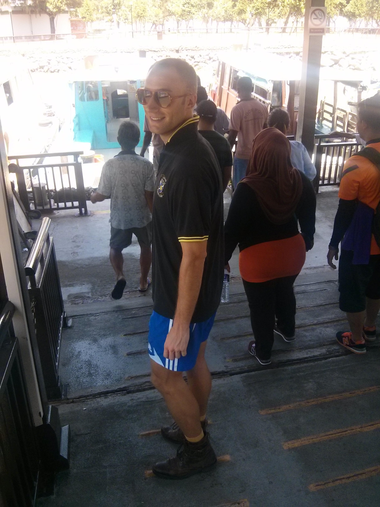
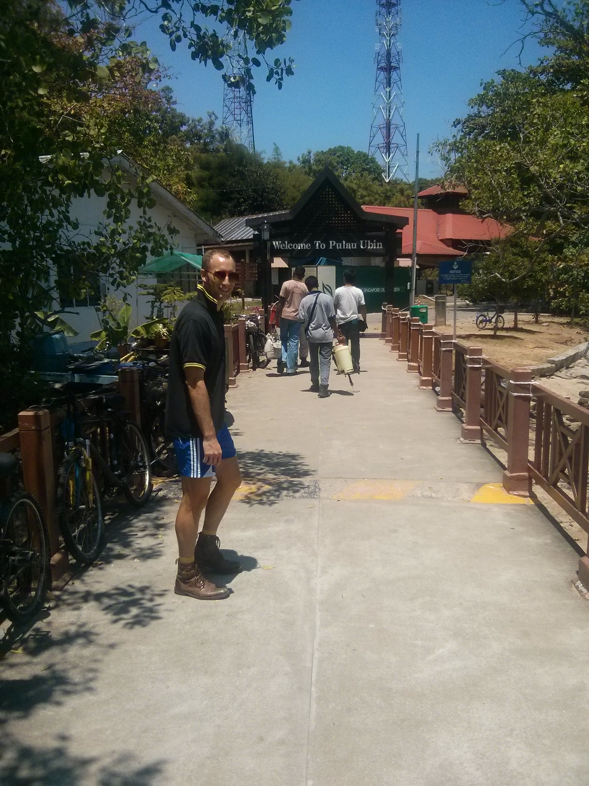
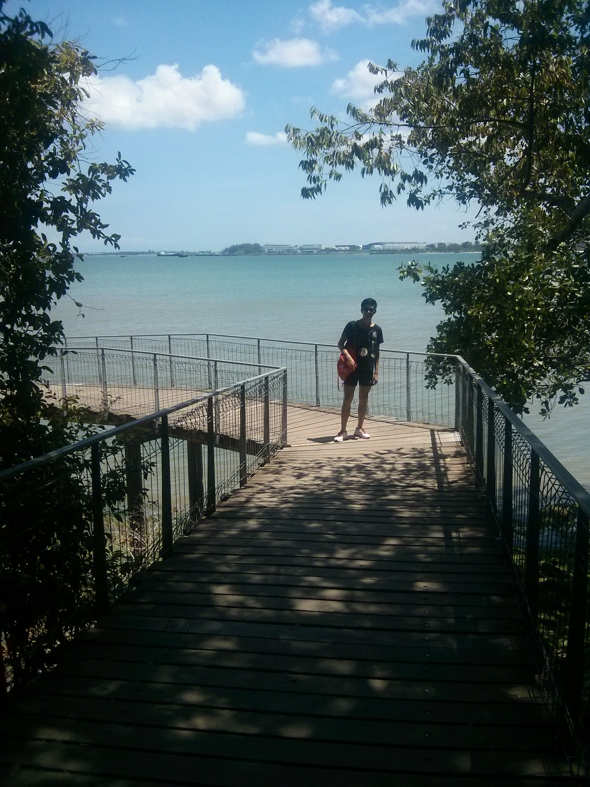
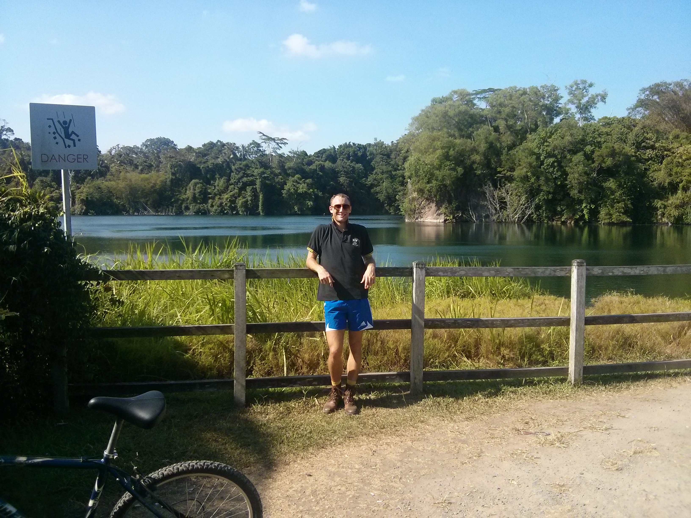

Pulau Ubin is a small island off the northeast coast of Singapore. A lot of people take day trips there and rent bikes to go around the island, and you can probably do it in about a day or less. Super cool. All you have to do is take a bus to the docks, and then you can take a small ferry boat to the island at the fine, affordable cost of Singapore 2 dollars. It's almost as if you step back in time to peek into Singapore culture before development.
There is a well defined trail through the island, and the maps are well laid out as well. At some point, we decide it's too F'in warm so we strip down to our speedos and continue the bike ride as such. We ran into a small family of wild boar, as well as some local families taking a picnic along the small pockets of beach that you come across. The picnic was with a human family, not a boar one. Fascinating landscape, and definitely worth the trip.
I believe some people still live on the island, but most signs of inhabited life are rare. We saw a random man selling coconuts off on a stand, and a couple other people with small popup shops selling stuff, but that's it. The people that run the restaurants right when you get off are probably residents too, but the numbers are definitely in decline. In any case, it must be quite an interesting living style.



